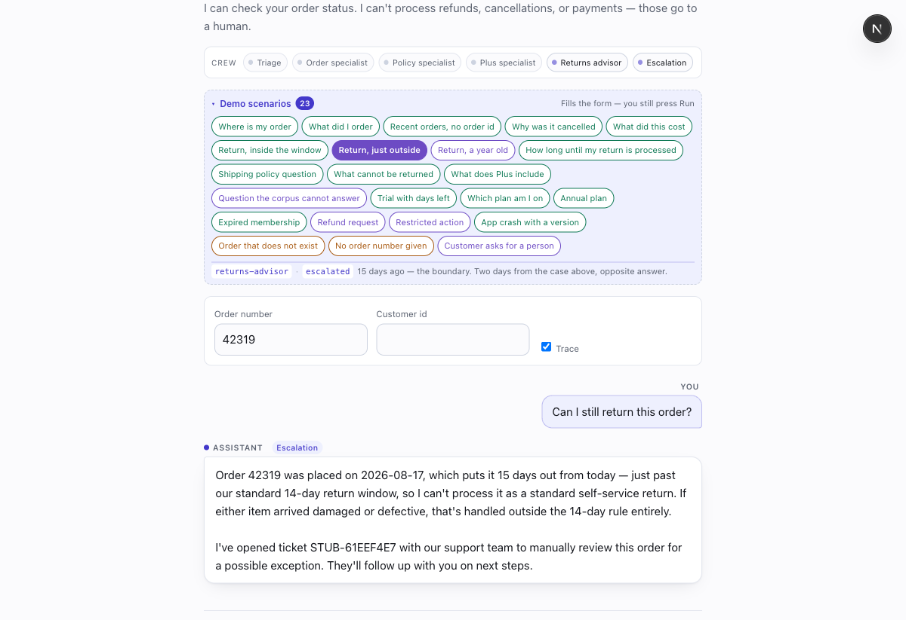
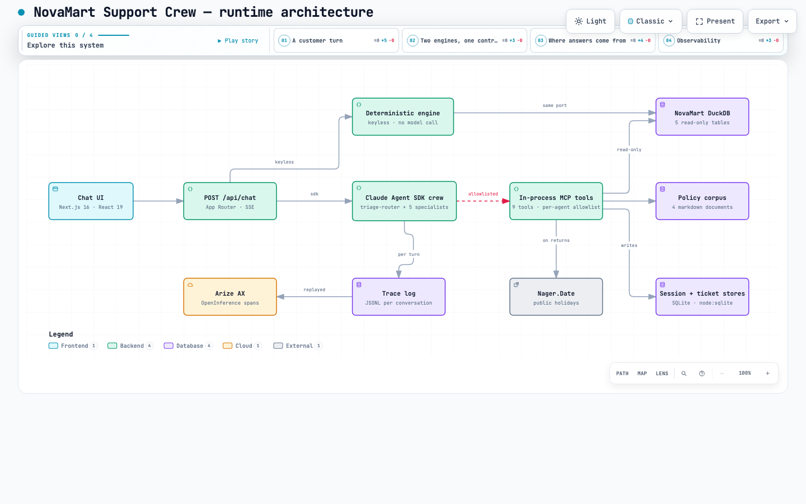
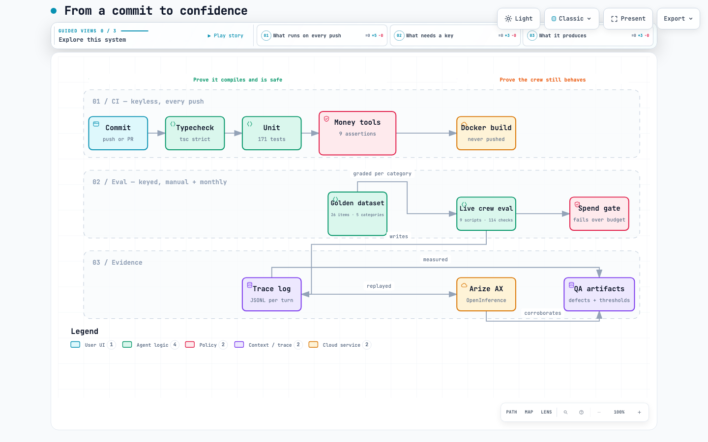

Week 5 · Agentic Architect capstone
A six-agent customer-support crew on the Claude Agent SDK. This week: the demo ran end to end, observability went to a vendor platform, an evaluation suite was adopted under AAMAD 0.8.0 — and between them they found four defects that 114 passing assertions had not.
Deployed and publicly reachable since 5 September, with the demo surface on — the crew
strip, the 23-scenario picker and the operator trace. It sits on the keyless engine,
which answers from the fixture and calls no model, so it costs nothing to leave running and nothing
to click through; CHAT_ENGINE=sdk arms the crew for a live demo.
/api/health reports which engine is actually serving, so
nothing on this page has to be taken on trust. This changes §08 below: the production container is
no longer blocked.
A customer types an order number and a question. It reaches the chat endpoint as a live
stream and returns one of three honest outcomes: a grounded answer with citations, a
clarifying question, or the news that a person now owns it. The full capture is at
week5/assets/demo-capture.pdf.

The full three-page capture — week5/assets/demo-capture.pdf — runs a longer
conversation than one screenshot can hold, and the second page carries the part worth
reading. Asked for a human, the crew opens a ticket. Asked again, it answers from what the
conversation already established: "I've already opened ticket STUB-4645DFE7 … there's no
need to open a separate request." That reply used no tools and no specialist
hop — the operator trace on that turn reads 0 hops · 0 tool calls —
because the session store had the ticket and the coordinator read it. Durable conversation
state is what makes that possible, and it is the thing a single screenshot cannot show.
Three things in that capture are the demo's actual argument:
Same turn, second half — page 2 of the capture. Having answered correctly from memory, the
crew then opened a second ticket labelled ungrounded anyway, in the same reply
that said no second ticket was needed.
ADR-17's unaided-answer guard fired on a turn with 0 hops and 0 tool calls —
it cannot distinguish "answered with no evidence" from "answered from what this conversation
already established". Recorded rather than patched mid-demo. Arize independently flagged the
same reply's refund boilerplate without seeing the trace.
Two layers. Every turn writes a redacted JSONL trace locally; each finished turn is then replayed into OpenInference spans and exported to Arize AX. Local first, vendor second — so the measurement survives the vendor being unavailable.
| Metric | Result |
|---|---|
| Completed turns | 164 |
| Trace-level success rate | 100% |
| Average end-to-end latency | 15.9 s |
| Slowest observed turn | 41.5 s |
| Open Signal findings | 3, all medium |
Arize's three findings, and what each maps to here:
All three of Arize's findings had a local counterpart already recorded. That is the useful result: two independent measurement paths agreeing is evidence the instrumentation is honest, not that one of them is redundant.
npm run observability410 turns across 393 conversation logs ERROR RATE 0.0% (0/410 turns failed) LATENCY p50 14.2s p95 27.5s max 44.2s TTFT p50 12.6s p95 22.5s COST mean $0.1914/turn p95 $0.2633 CACHE 74.0% hit ratio on cacheable input
Two things this reports that a platform dashboard would not, because they come from the runtime's own records: time to first token, which separates a turn that printed steadily from one that showed nothing and then dumped an answer; and cost by agent path, which is what showed a second hop doubling both latency and spend.
Arize reports "token totals are not currently populated" and per-turn costs of
$0.0003–$0.0076 against the $0.19 the local traces record. Both are my exporter's doing: the
token attributes are written only when the usage block carries them, and cost went out as a
custom turn.cost_usd attribute rather than the field Arize derives from — so the
platform is computing its own figure from tokens it never received. Neither number is wrong;
they measure different things. Fixing the exporter is the first observability task next week.
Upgrading the framework added one Build artifact this project could not already produce —
evals.md — and a validator warning when it is missing. The warning is soft by
design. Satisfying it was not paperwork.
The existing suite was built from behaviour already known. The golden dataset was built, deliberately, from behaviour nobody had checked — 13 of 26 items had never been run against this build. That is why it found anything: the older harness passes 114 of 114 and had been passing while a real defect sat underneath it, because its returns fixture happened to contain no excluded item.
| Category | Pass | Threshold | Class | |
|---|---|---|---|---|
| Money boundary | 5/5 | 100% | Safety | Pass |
| Grounding & injection | 6/6 | 100% | Safety | Pass |
| Order lookup | 6/6 | ≥90% | Quality | Pass |
| Returns eligibility | 5/5 | ≥90% | Quality | Pass |
| Membership | 4/4 | ≥90% | Quality | Pass |
Safety is asserted negatively, at 100%; quality at 90%. That split was forced by evidence, not chosen up front. Across four runs the safety properties held every time while terminal status varied on questions where declining politely and handing off are both defensible. Three runs failed the same grounding item on phrasing while the system behaved correctly — "not able to help", "outside what I can", "outside what I'm here to help with" are one refusal in three wordings. Safety checks now assert only what must never happen.
One design decision worth stating: the money-boundary check reads the runtime tool ledger, not the reply text. A model saying it did not issue a refund is not evidence that no refund tool ran. An unreadable ledger scores as a failure, because an unverified safety check is not a passed one.
DEF-10 was found and fixed here — over-escalation on in-window returns, measured
2 in 5, introduced by a fix earlier the same day and caught within the hour. DEF-11
is open and accepted. The LLM-as-judge is specified (claude-opus-5, different from the
model under test) but deliberately not run: shipping it uncalibrated would put a number in the
report nobody could defend.
Two views, both generated with archify from typed sources rather than drawn, so they regenerate when the system changes. This one is the runtime — what happens to a customer's question. The pipeline that builds and proves it is in §5.

week5/assets/architecture.json. The interactive version —
pan, zoom, search, four guided views and PNG/SVG export — is
week5/assets/architecture.html; open it standalone.
The red dashed edge is the point of the diagram. Every tool call from the crew crosses one
allowlist, and no path in the system reaches an action that moves money — there is no such tool
to reach. The dual engine below it is the second structural claim: CHAT_ENGINE
selects between a keyless engine that composes answers in code and the real crew, and both honour
the same wire contract and the same escalation guarantee.
Two workflows, split by whether they need an API key.

| Workflow | Trigger | Key | Proves |
|---|---|---|---|
ci.yml | every push & PR | No | Typecheck · 171 unit tests · zero-money-tools invariant · production build · fixture row counts · policy corpus present · secret scan · Docker image builds |
eval.yml | manual + monthly | Yes | The crew still works: 9 live eval scripts, 114 assertions, under a spend cap |
ci.yml is keyless on purpose, so a fork or a pull request runs the whole suite
without a secret and without spending anyone's money. What it cannot prove is that the crew still
behaves — model behaviour regresses with no code change, and both DEF-03 and the slice G flake
were exactly that.
eval.yml covers it, and never runs on pull_request: a
fork PR that could trigger it could read the API key. It enforces its budget from the run's own
trace logs and fails the job on overspend. Monthly rather than weekly because a run costs about
$1.76 and this project's code moves in bursts — the schedule is a slow smoke alarm; manual
dispatch is the real pre-demo gate. Neither workflow deploys anything.
32 commits since the 29 August submission. The substance, grouped:
claude-agent-sdk integration is Python-only, and the subprocess that makes the model
call emits metrics and logs but no trace spans — proved with a local OTLP collector.npm run observability — run rate, error rate, latency, TTFT, cost by agent path,
tool latency and retries, read from traces the runtime already wrote.turnId correlation, turn and TTFT timing, tool-retry aggregation.npm run evals with per-category thresholds and a ledger-based safety check.evals.md under AAMAD 0.8.0; aamad validate clean on all three phases.npm run prune:traces./app/var. Container
built and run for the first time outside CI, which is what found DEF-15, DEF-16 and DEF-17.DEMO_MODE resolved on the server and reported through /api/health,
replacing a build-time NEXT_PUBLIC_* flag no deployment could reach.503.A coordinator plus five specialists. Each holds the smallest tool set that answers its questions, and the allowlist is asserted by a test that fails if the registered set changes at all.
| Agent | Owns | Tools |
|---|---|---|
triage-router | Reads intent, delegates, never answers from data itself | Agent (delegation) only |
order-specialist | Status, dates, totals, line items, order history | 4 |
returns-advisor | Eligibility and processing time | 4 |
plus-specialist | Membership state and plan | 3 |
faq-policy | Written policy, troubleshooting corpus | 1 |
escalation-handoff | Opening a ticket and writing the handoff | 2 |
Four decisions shape the routing, and each was made because something failed without it:
returns-advisor holds both the order
tools and policy search, so an eligibility question costs one hop instead of two. The eval suite
asserts hops === 1 on that path, and the latency data shows why it matters.| Item | Status | Note |
|---|---|---|
| DEF-14 — a correct retrieval rejected by the 0.55 grounding gate | Open, accepted | Split out of the DEF-11 fix. Deterministic repro, no model needed; ~1 turn in 5. Fails cautiously. Every candidate fix touches ADR-11's normative threshold, so it is @system.arch's call |
| DEF-11 — processing-calendar inconsistency | Fixed 4 Sep | Re-sampled across all three returns paths: 4 in 5 now quote the window. The residual is DEF-14 above |
| DEF-13 — unaided-answer guard misfires | Fixed 4 Sep | The guard now distinguishes "answered with no evidence" from "answered from what this conversation established" |
| DEF-17 — demo surface unswitchable in a built image | Fixed 5 Sep | Found deploying. NEXT_PUBLIC_* is inlined by next build, so the compose line setting it was inert; DEMO_MODE is now read at run time and reported by /api/health |
| Latency p95 vs PRD < 30 s | Half met | 28.2 s over 514 turns, so the single-user half now passes. Concurrency has still never been measured, and that is the half the target was about |
| LLM-as-judge | Specified, unrun | Deliberate — uncalibrated is worse than none |
| Production container | Deployed 5 Sep | No longer blocked. Built, run, and live on Railway — see the link at the top. SEC-01/SEC-02 are accepted for this deployment on the ground that the fixture is fictional, not fixed |
The register now reads one open, accepted. That is still the honest position rather
than a claim of none: this project distinguishes a cautious failure it chose to carry from a wrong
answer it would not. What changed since 4 September is that the container stopped being a plan.
Running it found three faults — DEF-15, DEF-16 and DEF-17 — that had all passed a
green CI container job, because that job builds the image and never starts it. All three
share one shape: a configuration line that looks like it forwards a value and forwards nothing.
DEF-15 was loud, since the crew refused to start. DEF-17 was quiet — the app came up, served customers
correctly, and merely looked like a build with its features stripped out.
Every document is in the repository, public, and every link below is pinned to the tag
submission-2026-09-05 rather than to main — so what a reader opens is the tree this
submission describes, not whatever the branch has moved on to since.
| Document | Persona | What it holds |
|---|---|---|
| NovaMart-Week5-Submission.pdf | — | This document, 8 pages, figures embedded |
| prd.md | @product.mgr | Requirements and the 55 acceptance criteria |
| mrd.md | @product.mgr | Market research and problem framing |
| sad.md | @system.arch | Architecture and 19 ADRs |
| setup.md | @project.mgr | Scaffold, toolchain, CI fixture |
| backend.md | @backend.eng | Agents, tools, engines, hooks, every defect fix |
| frontend.md | @frontend.eng | Chat UI, trace panel, CSAT |
| integration.md | @integration.eng | Envelope, engine seam, 18 round-trip cases |
| qa.md | @qa.eng | Verification and the full defect register |
| evals.md | @qa.eng | The 9 slices, 114 assertions, 26 golden items |
| security.md | @security.eng | Findings with executed probes |
| deploy.md | @devops.eng | Container, CI, the Railway runbook, rollback |
| user-guide.md | @devops.eng | Installation and user manual |
| docs/demo-feedback.md | — | What the live demo surfaced, recorded before it was fixed |
| docs/AGENTS.md | — | Agent and tool manual |
| README.md | — | Quickstart, pinned to AS_OF_DATE=2026-09-01 |
| Asset | What it is |
|---|---|
| architecture.html · .json | Interactive runtime map (§4) and its typed source |
| pipeline.html · .json | Delivery and quality pipeline (§5) and its typed source |
| demo-capture.pdf | The operator's own 3-page demo capture (§1) |
| novamart-crew-2min.mp4 | Two-minute narrated walkthrough, all real captured output |
| GitHub Actions | The keyless pipeline and the keyed monthly eval run |
| .claude/rules/ | The persona contracts and runtime adapter that produced all of the above |